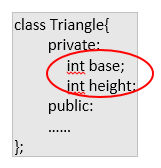
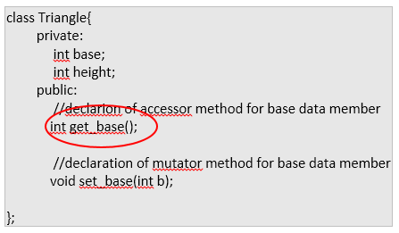
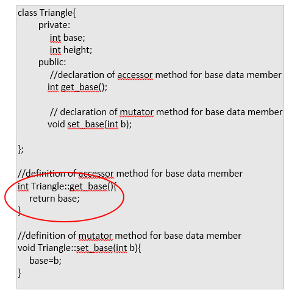
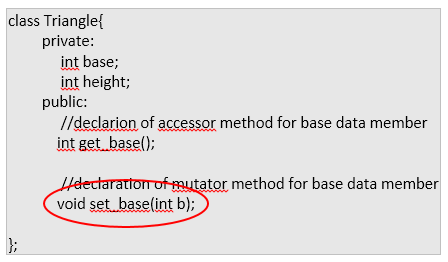
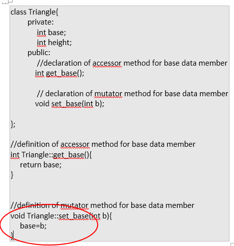
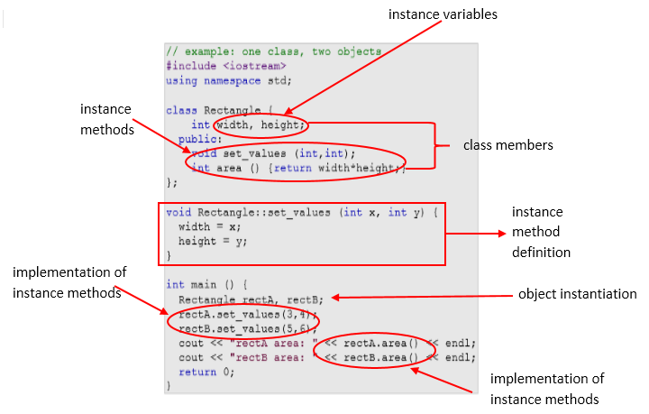

".$val.""; } ?>
In object-oriented programming, we view an application as a system of interacting objects. Each object is responsible for its own actions. The objects interact by sending messages to one another and behaving in certain ways in response to the messages. A message may be accompanied by one or more pieces of data, which might be needed for the object to carry out the action. When an object receives a message, it is the object's responsibility to carry out the action using some method.
5.3.1 The Structure of a Program that Uses Classes
In general, we will use the following outline for all our simple programs that use classes in this section.
We shall use the following program structure: (for simple programs that use classes)
//Preprocessor directives
//Class declarations
//Method definitions
//Definition of main()
We emphasize that program structure applies to simple programs. For more complex programs we can divide the program code into several files, one file containing main() and the others each containing one class definition. After compiling the source files, the linker combines the object files into one executable program. For now, however, we shall stay with the simple program structure described.
5.3.2. Defining a Class
Classes are defined using either keyword class or keyword struct, with the following syntax:
class Class_Name {
access_specifier_1:
member1;
access_specifier_2:
member2;
...
public class method declarations;
public class method declaration and definition;
...
} ;
public class method definitions for class methods that are only declared inside the class
Where class_name is a valid identifier for the class, object_names is an optional list of names for objects of this class. The body of the
declaration can contain members, which can either be data or function declarations, and optionally access specifiers.
Note: Coding Guidelines
· Think of an appropriate name for your class. Don't just call your class XYZ or any random names you can think of.
· Class names should start with a CAPITAL letter. If a class is a two word name, capitalize the first letter of each word and use underscore to connect them.
For example:
class Triangle {
access_specifier_1:
member1;
access_specifier_2:
member2;
...
} ;
class Student_Record {
access_specifier_1:
member1;
access_specifier_2:
member2;
...
} ;
Note : object_name is optional when creating the class.
Classes have the same format as plain data structures, except that they can also include functions and have these new things called access specifiers. An access specifier is one of the following three keywords: private, public or protected. These specifiers modify the
access rights for the members that follow them:
By default, all members of a class declared with the class keyword have private access for all its members. Therefore, any member that is declared before
any other access specifier has private access automatically.
5.3.3 Declaring Class Members
A class contains class members as mentioned in defining the class., which can either be data(known as attribute) or function declarations (can be any of the following: constructor method, accessor method or mutator method). The following is the syntax on how we declare a class members:
Syntax for declaring instance variable (one of the class members) of a class, usually have a private access specifier.
:
; Or
Syntax for declaring class method (another class member), usually have a public access specifier.
:
();
()
{
Method definition…
};
Note: Coding Guidelines
· Declare all your class members (instance variables) on the top of the class declaration.
· Declare one variable for each line.
· Class Members (instance variables), like any other variables should start with a SMALL letter.
· Use an appropriate data type for each variable you declare.
· Declare class members (instance variables) as private so that only class methods can access them directly.
For example:
class Triangle{
private:
int base;
int height;
public:
Triangle();
void set_base(int);
int get_base();
int area();
};
class Student_Record {
private:
string stud_no;
string stud_name;
int units_enrolled;
double rate_per_unit;
public:
Student_Record();
double compute_tfee();
};
Note: base and height are the private class members for class Triangle and stud_no, stud_name,units_enrolled while rate_per_unit are private class members for class Student_Record.
Triangle(), set_base(), get_base() and area() are the public class members for the class Triangle while Student_Record() and compute_tfee() are the public class members for the class Student_Record.
Public class members (usually class methods) will be more elaborated on the next discussion.
5.3.4 Declaring Objects
Defining a class does not create any actual objects. A class is just an abstract descriptions of what an object will be like if any objects are ever actually instantiated.
Like the discussion in string to declare a string object is:
string str;Therefore, the syntax in declaring objects out of the user-defined class is
; For example, using the Triangle class, we can declare object as
Triangle triA;
Triangle triB;
We can also declare objects upon defining the class by specifying the object_names (list by comma if more than one) like,
class Triangle{
private:
int base;
int height;
public:
Triangle();
void set_base(int b);
int get_base();
int area();
}triA,triB;
Wherein, objects triA and TriB are created(declared) upon defining the class Triangle.
Note:
· We can declare object inside the main or upon defining the class itself.
5.3.5 Class Methods
A class method (also known as member function) of a class is a function that has its definition or its prototype within the class definition like any other variable. It operates on any object of the class of which it is a member, and has access to all the members of a class for that object.
It is very important to remember that class methods have access to all the instance variables of the class. There is no need to declare the class instance variables inside a class method just use the instance variables in the method.
All class methods including constructor (to be discussed later) must be declared inside the definition of the class before it can be defined outside the class definition (declaration). And any method that is defined outside the class declaration must use the scope resolution operator, :: , in its method definition header as follows:
return-type ClassName::MethodName(parameter-list)
Read the operator :: as the possessive "'s". For example, read the definition header of set_values() of the Triangle class as “Triangle’s set_values()”.
For example, we have a class definition such as,
class Triangle{
private:
int base;
int height;
public:
void set_base(int b);
int get_base();
int area();
}triA,triB;Where set_base(int), get_base() and area() are class methods for the class Triangle.
Therefore we should have the definition of the class methods set_base(int), get_base() and area() outeside the class definition using the scope resolution operator (::), such as,
class Triangle{
private:
int base;
int height;
public:
//class method declaration
void set_base(int);
int get_base();
int area();
}triA,triB;
//class method definition for set_base(int)
void Triangle::set_base(int b){
base = b;
}
//class method definition for get_base()
int Triangle::get_base(){
return base;
}
//class method definition for area()
int Triangle::area(){
return (base * height) / 2;
}Why is the scope resolution operator necessary? There are situations in which it is necessary to declare several classes. In this case, it is possible that two or more of the classes will have methods with the same name. Suppose, for example, that we also declare a Cirlce class, which also has a set_values() method. If the set_values() methods of the two classes are defined inside their respective class definitions, there would be no confusion about which method is being defined. However, if the methods are defined outside the class definitions, as we did for the set_values() method, then it is necessary to specify to which class each method the set_values() method belongs. The definition Triangle::set_values() would be for Triangle's set_values() method, and the definition Circle::set_values() would be for Circle's set_values() method.
For example:
Example 1
class Triangle{
private:
int base;
int height;
public:
//class method declaration
void set_base(int);
int get_base();
double area ();
};
//set_base() definition
void Triangle::set_base(int b){
base = b;
}
//get_base() definition
int Triangle::get_base(){
base = b;
}
//area() definition
double Triangle::area (){
return (base*height)/2;
}Example 2
class Circle{
private:
int radius;
public:
//class method declaration
void set_values (int);
double area ();
};
//set_values() definition
void Circle::set_values (int r){
radius = r;
}
//area() definition
double Circle::area() {
return 3.1416 * (radius * radius);
}
NOTE: In both examples, there is set_base(),get_base() and area() class methods for classes Triangle and Circle. Notice that both the set_value() and area() class methods are defined outside the class, this why is the scope resolution operator is necessary. Because we will know who possess’ the method. As in the definition Triangle::set_values() would be for “Triangle's set_values()” method, and the definition Circle::set_values() would be for “Circle's set_values()” method.
Example 3class Student_Record {
private:
string stud_no;
string stud_name;
int units_enrolled;
double rate_per_unit;
public:
void set_stud_no(string);
void set_stud_name(string);
double compute_tfee(int,double);
}
void Student_Record::set_stud_no(string num){
stud_no = num;
}
void Student_Record::set_stud_name(string name){
stud_name = name;
}
double Student_Record::compute_tfee(int units, double rate){
return units * rate;
}Note: In this example, the set_studno(), set_stud_name() and compute_tfee() are all Student_Record class method.5.3.6 Accessing Class Method
To call a class method( also known as function method) of a particular object we use the dot (.) member operator.
Therefore, the syntax for accessing class method, use the following:
. For example:
Assuming we have created an object triA out of the Triangle class, like
Triangle triA;And we have a method named set_values() which requires an int argument, get_values() which returns an int and area() that returns double, like
void set_base(int b){
base = b;
}
int get_base(){
return base;
}
double area(){
return (base * height) / 2;
}
Then to call the class method area() for the object triA, we do the ff
triA.area();And to call the class method set_base(int)for the object triA, we do the ff
triA.set_base(12);And to call the class method get_base() for the object triA, we do the ff
triA.get_base();the dot(.) member operator is separator for object and method.
NOTE:
· A common practice is to define short methods (one or two statements) within the class definition and longer methods outside the class declaration.
· All instance variables of a class are accessible inside all methods of the class. Therefore, you can code a class method as though the class instance variables have been declared inside the method definition.
5.3.7 A More Useful Class Accessor and Mutator Methods
A class method is divided into 3 classifications: accessor, mutator and constructor.
Accessor Method
A method whose only purpose is to access the value of a private instance variable of the class is sometimes called an accessor method. The get_base() in the Triangle class is an example of an accessor method.
Syntax of defining an accessor method
ClassNiame::(){
;
……
}
For example:
To recall, we have two private int class member in the Triangle class namely, int base; and int height; ,

Therefore, to include an accessor method to access(retrieve) the value of the private data member base, we should include the accessor method declaration inside the class such as,

Explanation of the example:
· Accessor method name starts with the word get followed by a name appropriate for the action of the method, such as get_base()- (get and the data member base in the Triangle class )
· It have a return-type the same as the data type of the class data member (also known as instance variable).
· The data type of base data member is int, that is why the get_base() accessor method will have a return type of int . So the complete declaration for the acccessor is
And the definition of the accessor method outside the class always has the keyword return , which returns the data member it represents, for example, the accessor method declaration int get_base(); will have a method definition

Of course, we have to follow the use of scope resolution operator ::
For more elaboration, for example, we have a private data member in the class such as
Therefore the accessor method declaration for the name and age data members respectively should be:
And the accessor method definition for each will be, assuming the class name is Sample:
Mutator Method
A method that changes the value or assign a value of an instance variable (data member) is called mutator method. The set_base() in the Triangle class is an example of an mutator method.
Syntax of defining an mutator method
ClassNiame::For example:
To recall, we have two private int class member in the Triangle class namely, int base; and int height; ,
Therefore, to include an mutator method to change(assign) the value of the private data member base, we should include the mutator method declaration inside the class such as,

Explanation of the example:
· Mutator method name starts with the word set followed by a name appropriate for the action of the method, such as set_base()- (set and the data member base in the Triangle class )
And the definition of the mutator method outside the class always assigns the value pass to the argument to data member in the class, for example, the method method declaration void set_base(int b); will have a method definition

Of course, we have to follow the use of scope resolution operator ::
For more elaboration, for example, we have a private data member in the class such as
Therefore the mutator method declaration for the name and age data members respectively should be:
And the mutator method definition for each will be, assuming the class name is Sample:
5.3.7. The Class Constructor
What would happen in Triangle class if we called the member function area before having called set_values? An
undetermined result, since the members base and height had never been assigned a value.
In order to avoid that, a class can include a special function called its constructor, which is automatically called whenever a new object of this class is created, allowing the class to initialize member variables or allocate storage.
A constructor is a class method that automatically executes when an object of that class is instantiated. The name of the constructor must be the same as the name of the class and the constructor cannot have a return type (because it always results in creating a class object). If a constructor is not explicitly declared in the class definition, by default, C++ provides the default constructor. The default constructor only creates the object it does not initialize the object's data members.
The scope resolution operator (::) must be used in the definition of the constructor because the definition is outside the class declaration.
Remember that constructors are important in instantiating an object as we discuss it in the previous lesson (string Class: Introduction to Classes and Objects) . It is a function (method) where all the initializations are placed.
Again the, the following are the properties of a constructor:
If we have a class definition, such as,
The constructor name will be
Therefore, we can modify the class definition to
And we can have the definition of the Triangle() constructor by using the scope resolution operator (::)
For example:
#include`
Note also that if we declare a constructor that has one or more arguments (as the Triangle() constructor with three arguments) the default no-argument constructor is no longer available to the program. In this case, every object that is declared must be initialized.
This constructor function is declared just like a regular member function, but with a name that matches the class name and without any return type; not
even void.
5.3.8. Constructor Overloading
In the previous topic, we used a no-argument constructor, the Triangle(), in the definition of the Triangle class. We now discuss using multiple constructors in a class,
C++ allows you to define several constructors for a class. This is called function overloading. Overloading allows us to have constructors for different sets of circumstances.
In Triangle class , we have a constructor that automatically assigns 10 to base and 50 to height, which are data members of the class.
We might also want a constructor that allows us to create a Triangle by giving only the base, with the height being assigned default values of 100. We might also want a constructor that allows us to create a Triangle by giving both the base and height. You must declare all three constructors in the class definition as follows.
The constructor is now overloaded because we have three different constructors depending on the number of arguments given in a Triangle object declaration. The three constructor definitions follow.
With the given example above, the C++ compiler distinguishes among the three constructors by the number and type of arguments provided in the declaration of an object. With this we created three Triangle objects namely triA, triB and triC as in
With this, the first declaration uses a no-argument constructor and creates the Triangle triA with a default base of 50 and default height of 100. The second declaration creates the Triangle triB with a default base of 20 and a height of 5. The third declaration creates the Triangle triC with a base of 13 and height of 27.
A complete class example with data members, default constructor, single and two argument constructor.
NOTE: Notice that we use the object triA inside the main() even though it is not instantiated inside the main(). Remember that in the syntax of defining a class,
Parts of a programmer-defined classes and objects
